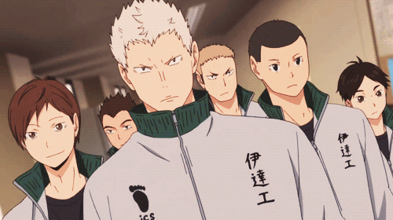

Seja bem-vindo ao portfólio Haikyuu: Date Kogyo
O colégio possui um poderoso time de vôlei, conhecimo como Muralha de Ferro, devido aos seus bloqueadores poderosos. A Estratégia principal da Date Tech é começar com um saque poderoso, que tem como objetivo quebrar a formação do adversário e, em seguida, bloquear o contra-ataque.
Jogadores:
| Nome | Posição |
|---|---|
| Yasushi Kamasaki #1 | Vice Capitão/Bloqueador Central |
| Kaname Moniwa #2 | Capitão/Levantador |
| Takehito Sasaya #3 | Atacante |
| Kenji Futakuchi #6 | Ponta |
| Takanobu Aone #7 | Bloqueador Central |
| Tutaka Obara #12 | Atacante |
| Koosuke Sakunami #13 | Líbero |
